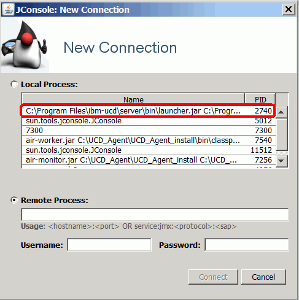
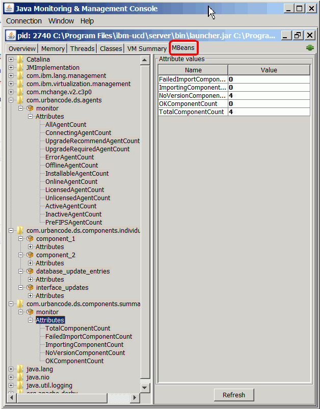

Monitor operating details with MBeans
With an external monitoring tool, such as IBM® Performance Management on Cloud 8.1.3 or New Relic, you can use Managed Beans (MBeans) to review numerous details about HCL® UrbanCode™ Deploy. For example, you can view statistics that specify how many components are available or see how long it takes for an application process to run to completion. You can use these statistics and details to assess the health of your deployments and deployment processes.
You can request and specify metrics by using four MBeans. Two MBeans provide summary information for all the targeted elements. For example, the agent summary information MBean provides aggregate information about all agents. The other two MBeans provide specific information about elements. The individual component information MBean provides details about a particular component, which you specify by name. The following list shows the four areas and the structure of the data that each MBean provides. Access the data according to the requirements of your monitoring tool. Refer to the documentation for the tool as required.
By default, the metrics monitoring is turned off. To enable the metrics monitoring, you must add a property to the installed.properties file. By default, this file is in the /opt/ibm-ucd/server/conf/server folder. To enable monitoring, add this line to the file:
jmx.monitoring.enabled=true
If your servers are working in high availability, you can specify how frequently the servers synchronize data to ensure that the servers maintain a consistent list of components and applications. In the installed.properties file, add the following line:
jmx.monitoring.ha.update.interval.minutes=measurement\_update\_time
where measurement_update_time is a whole number is greater than or equal to 30. You cannot get updates more frequently than every 30 minutes. This limit reduces the processing requirements on the servers.
You can monitor four areas of operational details.
Agent summary information
JMX: com.urbancode.ds.agents:type=monitor
AllAgentCount (The total number of agents)
ConnectingAgentCount (The number of agents that are currently attempting to connect to the server)
UpgradeRecommendAgentCount (The number of agents to upgrade to achieve best results)
UpgradeRequiredAgentCount (The number of agents that must be upgraded)
ErrorAgentCount (The number of agents that are in an error state)
OfflineAgentCount (The number of agents that are offline)
InstallableAgentCount (The number of agents that can be installed)
OnlineAgentCount (The number of agents that are online)
LicensedAgentCount (The number of the agents that have licenses)
UnlicensedAgentCount (The number of unlicensed agents)
PreFIPSAgentCount (The number of agents that were created before version 6.0.1.0.4. After this version, HCL UrbanCode Deploy supported the installation of FIPS compliant servers.)
Individual component information
JMX: com.urbancode.ds.components.individual.monitor:type=
COMPONENT\_NAME
LatestVersionSizeInBytes (The size in bytes of the most recent version of the specified component)
PreviousVersionSizeInBytes (The size in bytes of the previous version of the specified component)
AverageVersionSizeInBytes (The average in bytes size of all the versions of the specified components)
You can specify multiple components individually in three ways:
-
Name the component specifically, for example:
``` com.urbancode.ds.components.individual.monitor:type= ComponentA
com.urbancode.ds.components.individual.monitor:type= ComponentB
```
-
Use wildcards to report components with names that match the sample, for example:
com.urbancode.ds.components.individual.monitor:type= Component\* -
Use a wildcard to report all components, for example:
com.urbancode.ds.components.individual.monitor:type=*
Component summary information
JMX: com.urbancode.ds.components.summary:type=monitor
TotalComponentCount (The total number of components)
FailedImportComponentCount (The number of components whose latest version was not imported after an import request)
ImportingComponentCount (The number of components that are currently being imported)
NoVersionComponentCount (The number of components that do not have versions)
OKComponentCount (The number of components whose latest versions were not imported successfully)
Individual application information
JMX:com.urbancode.ds.applications.individual.monitor:type=
APPLICATION\_NAME
LatestDeploymentDurationInMS (The amount of time that the most recently completed deployment process lasted for the specified component)
PreviousDeploymentDurationInMS (The amount of time that the previously completed deployment process lasted for the specified component)
AverageDeploymentDurationInMS (The average amount of time that completed deployment processes lasted for the specified component)
-
Name the component specifically, for example:
``` com.urbancode.ds.components.individual.monitor:type= ApplicationA
com.urbancode.ds.components.individual.monitor:type= ApplicationB
```
-
Use wildcards to report components with names that match the sample, for example:
com.urbancode.ds.components.individual.monitor:type= Application\* -
Use a wildcard to report all components, for example:
com.urbancode.ds.components.individual.monitor:type=*
Viewing metrics with JConsole
JConsole is one external monitoring tool that is immediately available to you. For information about JConsole and starting the tool, see Using JConsole. After you turn on monitoring as described earlier and start JConsole, select a new connection as shown in this illustration:
.
Then, click the Mbeans tab. In the left navigation, select the metrics to view.

Parent topic: Reporting